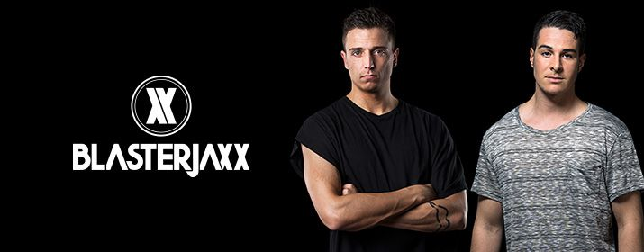

Mainstage: 22:00-23:00!
Blasterjaxx ist ein niederländisches EDM-Duo, bestehend aus den beiden DJs und
Produzenten Thom Jongkind und Idir Makhlaf, die ihren Durchbruch 2013 mit ihrer
Debüt-Single Faithfeierten. Mit ihrer Musik sind sie hauptsächlich in den Genres Dutch
House, Electro House und Big Room vertreten. Nur kurze Zeit später erschien ihre
zweite Single Puzzle, die in Zusammenarbeit mit Quinto, entstand. Insbesondere
promotet wurde Puzzlevon Hardwell. Bis Ende 2013 folgten weitere Club-Erfolge, wie
Snakeoder Loud and Proud, gemeinsam mit Billy the Kit.
2014 veröffentlichten sie Mystica. Es folgten sämtliche Auftritte auf Festivals wie beim
Ultra Music Festival 2014 in Miami, auf dem sie eine große Anzahl neuer Songs spielten,
darunter auch die Tracks Echound Rocket- der in Zusammenarbeit mit W&W entstand.
Zudem remixen sie für die Großen der Szene, wie Armin van Buurens Singel Save My
Night, Laidback Luke & Dimitri Vegas & Like Mikes Moresowie Tiëstos Adagio For
Strings. Weitere Remix-Aufträge erhält das Duo von Musikern wie Afrojack, Hardwell,
David Guetta oder Steve Aoki.
2014 erschien You Found Me. Es folgte der Track Beautiful World, den sie mit dem
niederländischen Hardstyle-Duo D-Block & S-te-Fan produzierten, und der
überraschend bigroomlastig wurde.
Blasterjaxx belegen derzeit Platz 13 der DJ MAG Top 100.